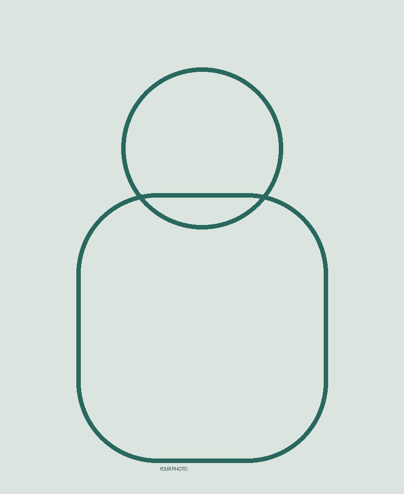

Electrical Design
SLD development/review, load assessment, equipment selection, cable sizing and voltage-drop checks.
ELECTRICAL EPC DESIGNER
Designing reliable electrical systems for complex EPC projects.
Electrical engineering professional focused on EPC design, electrical system studies, engineering deliverables, automation and practical digital tools. I enjoy simplifying repetitive engineering work and turning technical data into useful workflows.

My core strength is combining electrical EPC engineering with a strong interest in automation and digitalization.
I work with structured engineering data, technical deliverables, calculations, reviews and workflow improvement. I am also building practical engineering applications using web technologies, data workflows and AI-assisted productivity.
SLD development/review, load assessment, equipment selection, cable sizing and voltage-drop checks.
Single Line Diagrams, load lists, cable schedules, equipment data, layouts, cable routing and tray loading.
Load flow, short circuit, motor starting, protection coordination and electrical system analysis workflows.
LV/MV distribution concepts, transformers, switchgear, MCCs, motors, feeders and distribution systems.
Interdisciplinary coordination, document review, consistency checks, comments resolution and deliverable alignment.
Technical checking, data consistency, design verification and reducing errors in repetitive deliverables.
Current Organization · India
Design and engineering support for EPC projects, covering electrical deliverables, system studies, technical reviews and multidisciplinary coordination.
Previous Organization · India
Electrical design and project engineering activities with emphasis on technical documentation, calculations, reviews and project deliverables.
Replace company names, dates and quantified achievements with your actual details.
Interactive engineering capability tool for organizing team skills, expertise and searchable engineering information.
Practical calculators, forms, dashboards and data workflows designed to reduce repetitive engineering activities.
Exploration of AI/LLM workflows for technical information, document understanding and engineering productivity.
University / Institute · Year
Add your electrical, ETAP, AI/ML, Python or other certifications.
LET'S CONNECT
Electrical EPC Designer · Engineering · Automation · AI/ML